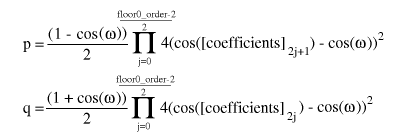

Table of Contents
- 1. Introduction and Description
- 2. Bitpacking Convention
- 3. Probability Model and Codebooks
- 4. Codec Setup and Packet Decode
- 5. comment field and header specification
- 6. Floor type 0 setup and decode
- 7. Floor type 1 setup and decode
- 8. Residue setup and decode
- 9. Helper equations
- 10. Tables
- 1. Embedding Vorbis into an Ogg stream
- 2. Vorbis encapsulation in RTP
- 3. Colophon
This document provides a high level description of the Vorbis codec's construction. A bit-by-bit specification appears beginning in Section 4, “Codec Setup and Packet Decode”. The later sections assume a high-level understanding of the Vorbis decode process, which is provided here.
Vorbis is a general purpose perceptual audio CODEC intended to allow maximum encoder flexibility, thus allowing it to scale competitively over an exceptionally wide range of bitrates. At the high quality/bitrate end of the scale (CD or DAT rate stereo, 16/24 bits) it is in the same league as MPEG-2 and MPC. Similarly, the 1.0 encoder can encode high-quality CD and DAT rate stereo at below 48kbps without resampling to a lower rate. Vorbis is also intended for lower and higher sample rates (from 8kHz telephony to 192kHz digital masters) and a range of channel representations (monaural, polyphonic, stereo, quadraphonic, 5.1, ambisonic, or up to 255 discrete channels).
Vorbis I is a forward-adaptive monolithic transform CODEC based on the Modified Discrete Cosine Transform. The codec is structured to allow addition of a hybrid wavelet filterbank in Vorbis II to offer better transient response and reproduction using a transform better suited to localized time events.
The Vorbis CODEC design assumes a complex, psychoacoustically-aware encoder and simple, low-complexity decoder. Vorbis decode is computationally simpler than mp3, although it does require more working memory as Vorbis has no static probability model; the vector codebooks used in the first stage of decoding from the bitstream are packed in their entirety into the Vorbis bitstream headers. In packed form, these codebooks occupy only a few kilobytes; the extent to which they are pre-decoded into a cache is the dominant factor in decoder memory usage.
Vorbis provides none of its own framing, synchronization or protection against errors; it is solely a method of accepting input audio, dividing it into individual frames and compressing these frames into raw, unformatted 'packets'. The decoder then accepts these raw packets in sequence, decodes them, synthesizes audio frames from them, and reassembles the frames into a facsimile of the original audio stream. Vorbis is a free-form variable bit rate (VBR) codec and packets have no minimum size, maximum size, or fixed/expected size. Packets are designed that they may be truncated (or padded) and remain decodable; this is not to be considered an error condition and is used extensively in bitrate management in peeling. Both the transport mechanism and decoder must allow that a packet may be any size, or end before or after packet decode expects.
Vorbis packets are thus intended to be used with a transport mechanism that provides free-form framing, sync, positioning and error correction in accordance with these design assumptions, such as Ogg (for file transport) or RTP (for network multicast). For purposes of a few examples in this document, we will assume that Vorbis is to be embedded in an Ogg stream specifically, although this is by no means a requirement or fundamental assumption in the Vorbis design.
The specification for embedding Vorbis into an Ogg transport stream is in Appendix 1, Embedding Vorbis into an Ogg stream.
Vorbis' heritage is as a research CODEC and its current design reflects a desire to allow multiple decades of continuous encoder improvement before running out of room within the codec specification. For these reasons, configurable aspects of codec setup intentionally lean toward the extreme of forward adaptive.
The single most controversial design decision in Vorbis (and the most unusual for a Vorbis developer to keep in mind) is that the entire probability model of the codec, the Huffman and VQ codebooks, is packed into the bitstream header along with extensive CODEC setup parameters (often several hundred fields). This makes it impossible, as it would be with MPEG audio layers, to embed a simple frame type flag in each audio packet, or begin decode at any frame in the stream without having previously fetched the codec setup header.
Note
Vorbis can initiate decode at any arbitrary packet within a bitstream so long as the codec has been initialized/setup with the setup headers.
Thus, Vorbis headers are both required for decode to begin and relatively large as bitstream headers go. The header size is unbounded, although for streaming a rule-of-thumb of 4kB or less is recommended (and Xiph.Org's Vorbis encoder follows this suggestion).
Our own design work indicates the primary liability of the required header is in mindshare; it is an unusual design and thus causes some amount of complaint among engineers as this runs against current design trends (and also points out limitations in some existing software/interface designs, such as Windows' ACM codec framework). However, we find that it does not fundamentally limit Vorbis' suitable application space.
The Vorbis format is well-defined by its decode specification; any encoder that produces packets that are correctly decoded by the reference Vorbis decoder described below may be considered a proper Vorbis encoder. A decoder must faithfully and completely implement the specification defined below (except where noted) to be considered a proper Vorbis decoder.
Although Vorbis decode is computationally simple, it may still run into specific limitations of an embedded design. For this reason, embedded designs are allowed to deviate in limited ways from the 'full' decode specification yet still be certified compliant. These optional omissions are labelled in the spec where relevant.
Decoder setup consists of configuration of multiple, self-contained component abstractions that perform specific functions in the decode pipeline. Each different component instance of a specific type is semantically interchangeable; decoder configuration consists both of internal component configuration, as well as arrangement of specific instances into a decode pipeline. Componentry arrangement is roughly as follows:
Global codec configuration consists of a few audio related fields (sample rate, channels), Vorbis version (always '0' in Vorbis I), bitrate hints, and the lists of component instances. All other configuration is in the context of specific components.
Each Vorbis frame is coded according to a master 'mode'. A bitstream may use one or many modes.
The mode mechanism is used to encode a frame according to one of multiple possible methods with the intention of choosing a method best suited to that frame. Different modes are, e.g. how frame size is changed from frame to frame. The mode number of a frame serves as a top level configuration switch for all other specific aspects of frame decode.
A 'mode' configuration consists of a frame size setting, window type (always 0, the Vorbis window, in Vorbis I), transform type (always type 0, the MDCT, in Vorbis I) and a mapping number. The mapping number specifies which mapping configuration instance to use for low-level packet decode and synthesis.
A mapping contains a channel coupling description and a list of 'submaps' that bundle sets of channel vectors together for grouped encoding and decoding. These submaps are not references to external components; the submap list is internal and specific to a mapping.
A 'submap' is a configuration/grouping that applies to a subset of floor and residue vectors within a mapping. The submap functions as a last layer of indirection such that specific special floor or residue settings can be applied not only to all the vectors in a given mode, but also specific vectors in a specific mode. Each submap specifies the proper floor and residue instance number to use for decoding that submap's spectral floor and spectral residue vectors.
As an example:
Assume a Vorbis stream that contains six channels in the standard 5.1 format. The sixth channel, as is normal in 5.1, is bass only. Therefore it would be wasteful to encode a full-spectrum version of it as with the other channels. The submapping mechanism can be used to apply a full range floor and residue encoding to channels 0 through 4, and a bass-only representation to the bass channel, thus saving space. In this example, channels 0-4 belong to submap 0 (which indicates use of a full-range floor) and channel 5 belongs to submap 1, which uses a bass-only representation.
Vorbis encodes a spectral 'floor' vector for each PCM channel. This vector is a low-resolution representation of the audio spectrum for the given channel in the current frame, generally used akin to a whitening filter. It is named a 'floor' because the Xiph.Org reference encoder has historically used it as a unit-baseline for spectral resolution.
A floor encoding may be of two types. Floor 0 uses a packed LSP representation on a dB amplitude scale and Bark frequency scale. Floor 1 represents the curve as a piecewise linear interpolated representation on a dB amplitude scale and linear frequency scale. The two floors are semantically interchangeable in encoding/decoding. However, floor type 1 provides more stable inter-frame behavior, and so is the preferred choice in all coupled-stereo and high bitrate modes. Floor 1 is also considerably less expensive to decode than floor 0.
Floor 0 is not to be considered deprecated, but it is of limited modern use. No known Vorbis encoder past Xiph.org's own beta 4 makes use of floor 0.
The values coded/decoded by a floor are both compactly formatted and make use of entropy coding to save space. For this reason, a floor configuration generally refers to multiple codebooks in the codebook component list. Entropy coding is thus provided as an abstraction, and each floor instance may choose from any and all available codebooks when coding/decoding.
The spectral residue is the fine structure of the audio spectrum once the floor curve has been subtracted out. In simplest terms, it is coded in the bitstream using cascaded (multi-pass) vector quantization according to one of three specific packing/coding algorithms numbered 0 through 2. The packing algorithm details are configured by residue instance. As with the floor components, the final VQ/entropy encoding is provided by external codebook instances and each residue instance may choose from any and all available codebooks.
Codebooks are a self-contained abstraction that perform entropy decoding and, optionally, use the entropy-decoded integer value as an offset into an index of output value vectors, returning the indicated vector of values.
The entropy coding in a Vorbis I codebook is provided by a standard Huffman binary tree representation. This tree is tightly packed using one of several methods, depending on whether codeword lengths are ordered or unordered, or the tree is sparse.
The codebook vector index is similarly packed according to index characteristic. Most commonly, the vector index is encoded as a single list of values of possible values that are then permuted into a list of n-dimensional rows (lattice VQ).
Before decoding can begin, a decoder must initialize using the bitstream headers matching the stream to be decoded. Vorbis uses three header packets; all are required, in-order, by this specification. Once set up, decode may begin at any audio packet belonging to the Vorbis stream. In Vorbis I, all packets after the three initial headers are audio packets.
The header packets are, in order, the identification header, the comments header, and the setup header.
The identification header identifies the bitstream as Vorbis, Vorbis version, and the simple audio characteristics of the stream such as sample rate and number of channels.
The comment header includes user text comments ("tags") and a vendor string for the application/library that produced the bitstream. The encoding and proper use of the comment header is described in Section 5, “comment field and header specification”.
The decoding and synthesis procedure for all audio packets is fundamentally the same.
- decode packet type flag
- decode mode number
- decode window shape (long windows only)
- decode floor
- decode residue into residue vectors
- inverse channel coupling of residue vectors
- generate floor curve from decoded floor data
- compute dot product of floor and residue, producing audio spectrum vector
- inverse monolithic transform of audio spectrum vector, always an MDCT in Vorbis I
- overlap/add left-hand output of transform with right-hand output of previous frame
- store right hand-data from transform of current frame for future lapping
- if not first frame, return results of overlap/add as audio result of current frame
Note that clever rearrangement of the synthesis arithmetic is possible; as an example, one can take advantage of symmetries in the MDCT to store the right-hand transform data of a partial MDCT for a 50% inter-frame buffer space savings, and then complete the transform later before overlap/add with the next frame. This optimization produces entirely equivalent output and is naturally perfectly legal. The decoder must be entirely mathematically equivalent to the specification, it need not be a literal semantic implementation.
Vorbis I uses four packet types. The first three packet types mark each of the three Vorbis headers described above. The fourth packet type marks an audio packet. All other packet types are reserved; packets marked with a reserved type should be ignored.
Following the three header packets, all packets in a Vorbis I stream are audio. The first step of audio packet decode is to read and verify the packet type; a non-audio packet when audio is expected indicates stream corruption or a non-compliant stream. The decoder must ignore the packet and not attempt decoding it to audio.
Vorbis allows an encoder to set up multiple, numbered packet 'modes', as described earlier, all of which may be used in a given Vorbis stream. The mode is encoded as an integer used as a direct offset into the mode instance index.
Vorbis frames may be one of two PCM sample sizes specified during codec setup. In Vorbis I, legal frame sizes are powers of two from 64 to 8192 samples. Aside from coupling, Vorbis handles channels as independent vectors and these frame sizes are in samples per channel.
Vorbis uses an overlapping transform, namely the MDCT, to blend one frame into the next, avoiding most inter-frame block boundary artifacts. The MDCT output of one frame is windowed according to MDCT requirements, overlapped 50% with the output of the previous frame and added. The window shape assures seamless reconstruction.
This is easy to visualize in the case of equal sized-windows:

And slightly more complex in the case of overlapping unequal sized windows:

In the unequal-sized window case, the window shape of the long window must be modified for seamless lapping as above. It is possible to correctly infer window shape to be applied to the current window from knowing the sizes of the current, previous and next window. It is legal for a decoder to use this method. However, in the case of a long window (short windows require no modification), Vorbis also codes two flag bits to specify pre- and post- window shape. Although not strictly necessary for function, this minor redundancy allows a packet to be fully decoded to the point of lapping entirely independently of any other packet, allowing easier abstraction of decode layers as well as allowing a greater level of easy parallelism in encode and decode.
A description of valid window functions for use with an inverse MDCT can be found in the paper “ The use of multirate filter banks for coding of high quality digital audio”, by T. Sporer, K. Brandenburg and B. Edler. Vorbis windows all use the slope function $y = \sin(.5*\pi \, \sin^2((x+.5)/n*\pi))$.
Each floor is encoded/decoded in channel order, however each floor belongs to a 'submap' that specifies which floor configuration to use. All floors are decoded before residue decode begins.
Although the number of residue vectors equals the number of channels, channel coupling may mean that the raw residue vectors extracted during decode do not map directly to specific channels. When channel coupling is in use, some vectors will correspond to coupled magnitude or angle. The coupling relationships are described in the codec setup and may differ from frame to frame, due to different mode numbers.
Vorbis codes residue vectors in groups by submap; the coding is done in submap order from submap 0 through n-1. This differs from floors which are coded using a configuration provided by submap number, but are coded individually in channel order.
A detailed discussion of stereo in the Vorbis codec can be found in the document Stereo Channel Coupling in the Vorbis CODEC. Vorbis is not limited to only stereo coupling, but the stereo document also gives a good overview of the generic coupling mechanism.
Vorbis coupling applies to pairs of residue vectors at a time; decoupling is done in-place a pair at a time in the order and using the vectors specified in the current mapping configuration. The decoupling operation is the same for all pairs, converting square polar representation (where one vector is magnitude and the second angle) back to Cartesian representation.
After decoupling, in order, each pair of vectors on the coupling list, the resulting residue vectors represent the fine spectral detail of each output channel.
The decoder may choose to generate the floor curve at any appropriate time. It is reasonable to generate the output curve when the floor data is decoded from the raw packet, or it can be generated after inverse coupling and applied to the spectral residue directly, combining generation and the dot product into one step and eliminating some working space.
Both floor 0 and floor 1 generate a linear-range, linear-domain output vector to be multiplied (dot product) by the linear-range, linear-domain spectral residue.
This step is straightforward; for each output channel, the decoder multiplies the floor curve and residue vectors element by element, producing the finished audio spectrum of each channel.
One point is worth mentioning about this dot product; a common mistake in a fixed point implementation might be to assume that a 32 bit fixed-point representation for floor and residue and direct multiplication of the vectors is sufficient for acceptable spectral depth in all cases because it happens to mostly work with the current Xiph.Org reference encoder.
However, floor vector values can span ~140dB (~24 bits unsigned), and the audio spectrum vector should represent a minimum of 120dB (~21 bits with sign), even when output is to a 16 bit PCM device. For the residue vector to represent full scale if the floor is nailed to -140dB, it must be able to span 0 to +140dB. For the residue vector to reach full scale if the floor is nailed at 0dB, it must be able to represent -140dB to +0dB. Thus, in order to handle full range dynamics, a residue vector may span -140dB to +140dB entirely within spec. A 280dB range is approximately 48 bits with sign; thus the residue vector must be able to represent a 48 bit range and the dot product must be able to handle an effective 48 bit times 24 bit multiplication. This range may be achieved using large (64 bit or larger) integers, or implementing a movable binary point representation.
The audio spectrum is converted back into time domain PCM audio via an inverse Modified Discrete Cosine Transform (MDCT). A detailed description of the MDCT is available in the paper “The use of multirate filter banks for coding of high quality digital audio”, by T. Sporer, K. Brandenburg and B. Edler.
Note that the PCM produced directly from the MDCT is not yet finished audio; it must be lapped with surrounding frames using an appropriate window (such as the Vorbis window) before the MDCT can be considered orthogonal.
Windowed MDCT output is overlapped and added with the right hand data of the previous window such that the 3/4 point of the previous window is aligned with the 1/4 point of the current window (as illustrated in the window overlap diagram). At this point, the audio data between the center of the previous frame and the center of the current frame is now finished and ready to be returned.
The decoder must cache the right hand portion of the current frame to be lapped with the left hand portion of the next frame.
The overlapped portion produced from overlapping the previous and current frame data is finished data to be returned by the decoder. This data spans from the center of the previous window to the center of the current window. In the case of same-sized windows, the amount of data to return is one-half block consisting of and only of the overlapped portions. When overlapping a short and long window, much of the returned range is not actually overlap. This does not damage transform orthogonality. Pay attention however to returning the correct data range; the amount of data to be returned is:
window_blocksize(previous_window)/4+window_blocksize(current_window)/4
from the center of the previous window to the center of the current window.
Data is not returned from the first frame; it must be used to 'prime' the decode engine. The encoder accounts for this priming when calculating PCM offsets; after the first frame, the proper PCM output offset is '0' (as no data has been returned yet).
The Vorbis codec uses relatively unstructured raw packets containing arbitrary-width binary integer fields. Logically, these packets are a bitstream in which bits are coded one-by-one by the encoder and then read one-by-one in the same monotonically increasing order by the decoder. Most current binary storage arrangements group bits into a native word size of eight bits (octets), sixteen bits, thirty-two bits or, less commonly other fixed word sizes. The Vorbis bitpacking convention specifies the correct mapping of the logical packet bitstream into an actual representation in fixed-width words.
In most contemporary architectures, a 'byte' is synonymous with an 'octet', that is, eight bits. This has not always been the case; seven, ten, eleven and sixteen bit 'bytes' have been used. For purposes of the bitpacking convention, a byte implies the native, smallest integer storage representation offered by a platform. On modern platforms, this is generally assumed to be eight bits (not necessarily because of the processor but because of the filesystem/memory architecture. Modern filesystems invariably offer bytes as the fundamental atom of storage). A 'word' is an integer size that is a grouped multiple of this smallest size.
The most ubiquitous architectures today consider a 'byte' to be an octet (eight bits) and a word to be a group of two, four or eight bytes (16, 32 or 64 bits). Note however that the Vorbis bitpacking convention is still well defined for any native byte size; Vorbis uses the native bit-width of a given storage system. This document assumes that a byte is one octet for purposes of example.
A byte has a well-defined 'least significant' bit (LSb), which is the only bit set when the byte is storing the two's complement integer value +1. A byte's 'most significant' bit (MSb) is at the opposite end of the byte. Bits in a byte are numbered from zero at the LSb to n (n=7 in an octet) for the MSb.
Words are native groupings of multiple bytes. Several byte orderings are possible in a word; the common ones are 3-2-1-0 ('big endian' or 'most significant byte first' in which the highest-valued byte comes first), 0-1-2-3 ('little endian' or 'least significant byte first' in which the lowest value byte comes first) and less commonly 3-1-2-0 and 0-2-1-3 ('mixed endian').
The Vorbis bitpacking convention specifies storage and bitstream manipulation at the byte, not word, level, thus host word ordering is of a concern only during optimization when writing high performance code that operates on a word of storage at a time rather than by byte. Logically, bytes are always coded and decoded in order from byte zero through byte n.
The Vorbis codec has need to code arbitrary bit-width integers, from zero to 32 bits wide, into packets. These integer fields are not aligned to the boundaries of the byte representation; the next field is written at the bit position at which the previous field ends.
The encoder logically packs integers by writing the LSb of a binary integer to the logical bitstream first, followed by next least significant bit, etc, until the requested number of bits have been coded. When packing the bits into bytes, the encoder begins by placing the LSb of the integer to be written into the least significant unused bit position of the destination byte, followed by the next-least significant bit of the source integer and so on up to the requested number of bits. When all bits of the destination byte have been filled, encoding continues by zeroing all bits of the next byte and writing the next bit into the bit position 0 of that byte. Decoding follows the same process as encoding, but by reading bits from the byte stream and reassembling them into integers.
The signedness of a specific number resulting from decode is to be interpreted by the decoder given decode context. That is, the three bit binary pattern 'b111' can be taken to represent either 'seven' as an unsigned integer, or '-1' as a signed, two's complement integer. The encoder and decoder are responsible for knowing if fields are to be treated as signed or unsigned.
Code the 4 bit integer value '12' [b1100] into an empty bytestream. Bytestream result:
|
V
7 6 5 4 3 2 1 0
byte 0 [0 0 0 0 1 1 0 0] <-
byte 1 [ ]
byte 2 [ ]
byte 3 [ ]
...
byte n [ ] bytestream length == 1 byte
Continue by coding the 3 bit integer value '-1' [b111]:
|
V
7 6 5 4 3 2 1 0
byte 0 [0 1 1 1 1 1 0 0] <-
byte 1 [ ]
byte 2 [ ]
byte 3 [ ]
...
byte n [ ] bytestream length == 1 byte
Continue by coding the 7 bit integer value '17' [b0010001]:
|
V
7 6 5 4 3 2 1 0
byte 0 [1 1 1 1 1 1 0 0]
byte 1 [0 0 0 0 1 0 0 0] <-
byte 2 [ ]
byte 3 [ ]
...
byte n [ ] bytestream length == 2 bytes
bit cursor == 6
Continue by coding the 13 bit integer value '6969' [b110 11001110 01]:
|
V
7 6 5 4 3 2 1 0
byte 0 [1 1 1 1 1 1 0 0]
byte 1 [0 1 0 0 1 0 0 0]
byte 2 [1 1 0 0 1 1 1 0]
byte 3 [0 0 0 0 0 1 1 0] <-
...
byte n [ ] bytestream length == 4 bytes
Reading from the beginning of the bytestream encoded in the above example:
|
V
7 6 5 4 3 2 1 0
byte 0 [1 1 1 1 1 1 0 0] <-
byte 1 [0 1 0 0 1 0 0 0]
byte 2 [1 1 0 0 1 1 1 0]
byte 3 [0 0 0 0 0 1 1 0] bytestream length == 4 bytes
We read two, two-bit integer fields, resulting in the returned numbers 'b00' and 'b11'. Two things are worth noting here:
Although these four bits were originally written as a single four-bit integer, reading some other combination of bit-widths from the bitstream is well defined. There are no artificial alignment boundaries maintained in the bitstream.
The second value is the two-bit-wide integer 'b11'. This value may be interpreted either as the unsigned value '3', or the signed value '-1'. Signedness is dependent on decode context.
The typical use of bitpacking is to produce many independent byte-aligned packets which are embedded into a larger byte-aligned container structure, such as an Ogg transport bitstream. Externally, each bytestream (encoded bitstream) must begin and end on a byte boundary. Often, the encoded bitstream is not an integer number of bytes, and so there is unused (uncoded) space in the last byte of a packet.
Unused space in the last byte of a bytestream is always zeroed during the coding process. Thus, should this unused space be read, it will return binary zeroes.
Attempting to read past the end of an encoded packet results in an 'end-of-packet' condition. End-of-packet is not to be considered an error; it is merely a state indicating that there is insufficient remaining data to fulfill the desired read size. Vorbis uses truncated packets as a normal mode of operation, and as such, decoders must handle reading past the end of a packet as a typical mode of operation. Any further read operations after an 'end-of-packet' condition shall also return 'end-of-packet'.
Reading a zero-bit-wide integer returns the value '0' and does not increment the stream cursor. Reading to the end of the packet (but not past, such that an 'end-of-packet' condition has not triggered) and then reading a zero bit integer shall succeed, returning 0, and not trigger an end-of-packet condition. Reading a zero-bit-wide integer after a previous read sets 'end-of-packet' shall also fail with 'end-of-packet'.
Unlike practically every other mainstream audio codec, Vorbis has no statically configured probability model, instead packing all entropy decoding configuration, VQ and Huffman, into the bitstream itself in the third header, the codec setup header. This packed configuration consists of multiple 'codebooks', each containing a specific Huffman-equivalent representation for decoding compressed codewords as well as an optional lookup table of output vector values to which a decoded Huffman value is applied as an offset, generating the final decoded output corresponding to a given compressed codeword.
The codebook mechanism is built on top of the vorbis bitpacker. Both the codebooks themselves and the codewords they decode are unrolled from a packet as a series of arbitrary-width values read from the stream according to Section 2, “Bitpacking Convention”.
For purposes of the examples below, we assume that the storage system's native byte width is eight bits. This is not universally true; see Section 2, “Bitpacking Convention” for discussion relating to non-eight-bit bytes.
A codebook begins with a 24 bit sync pattern, 0x564342:
byte 0: [ 0 1 0 0 0 0 1 0 ] (0x42) byte 1: [ 0 1 0 0 0 0 1 1 ] (0x43) byte 2: [ 0 1 0 1 0 1 1 0 ] (0x56)
16 bit [codebook_dimensions] and 24 bit [codebook_entries] fields:
byte 3: [ X X X X X X X X ] byte 4: [ X X X X X X X X ] [codebook_dimensions] (16 bit unsigned) byte 5: [ X X X X X X X X ] byte 6: [ X X X X X X X X ] byte 7: [ X X X X X X X X ] [codebook_entries] (24 bit unsigned)
Next is the [ordered] bit flag:
byte 8: [ X ] [ordered] (1 bit)
Each entry, numbering a
total of [codebook_entries], is assigned a codeword length.
We now read the list of codeword lengths and store these lengths in
the array [codebook_codeword_lengths]. Decode of lengths is
according to whether the [ordered] flag is set or unset.
If the
[ordered]flag is unset, the codeword list is not length ordered and the decoder needs to read each codeword length one-by-one.The decoder first reads one additional bit flag, the
[sparse]flag. This flag determines whether or not the codebook contains unused entries that are not to be included in the codeword decode tree:byte 8: [ X 1 ] [sparse] flag (1 bit)
The decoder now performs for each of the
[codebook_entries]codebook entries:1) if([sparse] is set){ 2) [flag] = read one bit; 3) if([flag] is set){ 4) [length] = read a five bit unsigned integer; 5) codeword length for this entry is [length]+1; } else { 6) this entry is unused. mark it as such. } } else the sparse flag is not set { 7) [length] = read a five bit unsigned integer; 8) the codeword length for this entry is [length]+1; }If the
[ordered]flag is set, the codeword list for this codebook is encoded in ascending length order. Rather than reading a length for every codeword, the encoder reads the number of codewords per length. That is, beginning at entry zero:1) [current_entry] = 0; 2) [current_length] = read a five bit unsigned integer and add 1; 3) [number] = read ilog([codebook_entries] - [current_entry]) bits as an unsigned integer 4) set the entries [current_entry] through [current_entry]+[number]-1, inclusive, of the [codebook_codeword_lengths] array to [current_length] 5) set [current_entry] to [number] + [current_entry] 6) increment [current_length] by 1 7) if [current_entry] is greater than [codebook_entries] ERROR CONDITION; the decoder will not be able to read this stream. 8) if [current_entry] is less than [codebook_entries], repeat process starting at 3) 9) done.
After all codeword lengths have been decoded, the decoder reads the vector lookup table. Vorbis I supports three lookup types:
- No lookup
- Implicitly populated value mapping (lattice VQ)
- Explicitly populated value mapping (tessellated or 'foam' VQ)
The lookup table type is read as a four bit unsigned integer:
1) [codebook_lookup_type] = read four bits as an unsigned integer
Codebook decode precedes according to [codebook_lookup_type]:
Lookup type zero indicates no lookup to be read. Proceed past lookup decode.
Lookup types one and two are similar, differing only in the number of lookup values to be read. Lookup type one reads a list of values that are permuted in a set pattern to build a list of vectors, each vector of order
[codebook_dimensions]scalars. Lookup type two builds the same vector list, but reads each scalar for each vector explicitly, rather than building vectors from a smaller list of possible scalar values. Lookup decode proceeds as follows:1) [codebook_minimum_value] = float32_unpack( read 32 bits as an unsigned integer) 2) [codebook_delta_value] = float32_unpack( read 32 bits as an unsigned integer) 3) [codebook_value_bits] = read 4 bits as an unsigned integer and add 1 4) [codebook_sequence_p] = read 1 bit as a boolean flag if ( [codebook_lookup_type] is 1 ) { 5) [codebook_lookup_values] = lookup1_values(
[codebook_entries],[codebook_dimensions]) } else { 6) [codebook_lookup_values] =[codebook_entries]*[codebook_dimensions]} 7) read a total of [codebook_lookup_values] unsigned integers of [codebook_value_bits] each; store these in order in the array [codebook_multiplicands]A
[codebook_lookup_type]of greater than two is reserved and indicates a stream that is not decodable by the specification in this document.
An 'end of packet' during any read operation in the above steps is considered an error condition rendering the stream undecodable.
The [codebook_codeword_lengths] array and
[codebook_entries] value uniquely define the Huffman decision
tree used for entropy decoding.
Briefly, each used codebook entry (recall that length-unordered codebooks support unused codeword entries) is assigned, in order, the lowest valued unused binary Huffman codeword possible. Assume the following codeword length list:
entry 0: length 2 entry 1: length 4 entry 2: length 4 entry 3: length 4 entry 4: length 4 entry 5: length 2 entry 6: length 3 entry 7: length 3
Assigning codewords in order (lowest possible value of the appropriate length to highest) results in the following codeword list:
entry 0: length 2 codeword 00 entry 1: length 4 codeword 0100 entry 2: length 4 codeword 0101 entry 3: length 4 codeword 0110 entry 4: length 4 codeword 0111 entry 5: length 2 codeword 10 entry 6: length 3 codeword 110 entry 7: length 3 codeword 111
Note
Unlike most binary numerical values in this document, we intend the above codewords to be read and used bit by bit from left to right, thus the codeword '001' is the bit string 'zero, zero, one'. When determining 'lowest possible value' in the assignment definition above, the leftmost bit is the MSb.
It is clear that the codeword length list represents a Huffman decision tree with the entry numbers equivalent to the leaves numbered left-to-right:
![[huffman tree illustration]](hufftree.png)
As we assign codewords in order, we see that each choice constructs a new leaf in the leftmost possible position.
Note that it's possible to underspecify or overspecify a Huffman tree via the length list. In the above example, if codeword seven were eliminated, it's clear that the tree is unfinished:
![[underspecified huffman tree illustration]](hufftree-under.png)
Similarly, in the original codebook, it's clear that the tree is fully populated and a ninth codeword is impossible. Both underspecified and overspecified trees are an error condition rendering the stream undecodable.
Codebook entries marked 'unused' are simply skipped in the assigning process. They have no codeword and do not appear in the decision tree, thus it's impossible for any bit pattern read from the stream to decode to that entry number.
Unpacking the VQ lookup table vectors relies on the following values:
the [codebook_multiplicands] array [codebook_minimum_value] [codebook_delta_value] [codebook_sequence_p] [codebook_lookup_type] [codebook_entries] [codebook_dimensions] [codebook_lookup_values]
Decoding (unpacking) a specific vector in the vector lookup table
proceeds according to [codebook_lookup_type]. The unpacked
vector values are what a codebook would return during audio packet
decode in a VQ context.
Lookup type one specifies a lattice VQ lookup table built
algorithmically from a list of scalar values. Calculate (unpack) the
final values of a codebook entry vector from the entries in
[codebook_multiplicands] as follows ([value_vector]
is the output vector representing the vector of values for entry number
[lookup_offset] in this codebook):
1) [last] = 0;
2) [index_divisor] = 1;
3) iterate [i] over the range 0 ... [codebook_dimensions]-1 (once for each scalar value in the value vector) {
4) [multiplicand_offset] = ( [lookup_offset] divided by [index_divisor] using integer
division ) integer modulo [codebook_lookup_values]
5) vector [value_vector] element [i] =
( [codebook_multiplicands] array element number [multiplicand_offset] ) *
[codebook_delta_value] + [codebook_minimum_value] + [last];
6) if ( [codebook_sequence_p] is set ) then set [last] = vector [value_vector] element [i]
7) [index_divisor] = [index_divisor] * [codebook_lookup_values]
}
8) vector calculation completed.
Lookup type two specifies a VQ lookup table in which each scalar in
each vector is explicitly set by the [codebook_multiplicands]
array in a one-to-one mapping. Calculate [unpack] the
final values of a codebook entry vector from the entries in
[codebook_multiplicands] as follows ([value_vector]
is the output vector representing the vector of values for entry number
[lookup_offset] in this codebook):
1) [last] = 0;
2) [multiplicand_offset] = [lookup_offset] * [codebook_dimensions]
3) iterate [i] over the range 0 ... [codebook_dimensions]-1 (once for each scalar value in the value vector) {
4) vector [value_vector] element [i] =
( [codebook_multiplicands] array element number [multiplicand_offset] ) *
[codebook_delta_value] + [codebook_minimum_value] + [last];
5) if ( [codebook_sequence_p] is set ) then set [last] = vector [value_vector] element [i]
6) increment [multiplicand_offset]
}
7) vector calculation completed.
The decoder uses the codebook abstraction much as it does the bit-unpacking convention; a specific codebook reads a codeword from the bitstream, decoding it into an entry number, and then returns that entry number to the decoder (when used in a scalar entropy coding context), or uses that entry number as an offset into the VQ lookup table, returning a vector of values (when used in a context desiring a VQ value). Scalar or VQ context is always explicit; any call to the codebook mechanism requests either a scalar entry number or a lookup vector.
Note that VQ lookup type zero indicates that there is no lookup table; requesting decode using a codebook of lookup type 0 in any context expecting a vector return value (even in a case where a vector of dimension one) is forbidden. If decoder setup or decode requests such an action, that is an error condition rendering the packet undecodable.
Using a codebook to read from the packet bitstream consists first of reading and decoding the next codeword in the bitstream. The decoder reads bits until the accumulated bits match a codeword in the codebook. This process can be though of as logically walking the Huffman decode tree by reading one bit at a time from the bitstream, and using the bit as a decision boolean to take the 0 branch (left in the above examples) or the 1 branch (right in the above examples). Walking the tree finishes when the decode process hits a leaf in the decision tree; the result is the entry number corresponding to that leaf. Reading past the end of a packet propagates the 'end-of-stream' condition to the decoder.
When used in a scalar context, the resulting codeword entry is the desired return value.
When used in a VQ context, the codeword entry number is used as an offset into the VQ lookup table. The value returned to the decoder is the vector of scalars corresponding to this offset.
This document serves as the top-level reference document for the bit-by-bit decode specification of Vorbis I. This document assumes a high-level understanding of the Vorbis decode process, which is provided in Section 1, “Introduction and Description”. Section 2, “Bitpacking Convention” covers reading and writing bit fields from and to bitstream packets.
A Vorbis bitstream begins with three header packets. The header packets are, in order, the identification header, the comments header, and the setup header. All are required for decode compliance. An end-of-packet condition during decoding the first or third header packet renders the stream undecodable. End-of-packet decoding the comment header is a non-fatal error condition.
Each header packet begins with the same header fields.
1) [packet_type] : 8 bit value 2) 0x76, 0x6f, 0x72, 0x62, 0x69, 0x73: the characters 'v','o','r','b','i','s' as six octets
Decode continues according to packet type; the identification header is type 1, the comment header type 3 and the setup header type 5 (these types are all odd as a packet with a leading single bit of '0' is an audio packet). The packets must occur in the order of identification, comment, setup.
The identification header is a short header of only a few fields used to declare the stream definitively as Vorbis, and provide a few externally relevant pieces of information about the audio stream. The identification header is coded as follows:
1) [vorbis_version] = read 32 bits as unsigned integer 2) [audio_channels] = read 8 bit integer as unsigned 3) [audio_sample_rate] = read 32 bits as unsigned integer 4) [bitrate_maximum] = read 32 bits as signed integer 5) [bitrate_nominal] = read 32 bits as signed integer 6) [bitrate_minimum] = read 32 bits as signed integer 7) [blocksize_0] = 2 exponent (read 4 bits as unsigned integer) 8) [blocksize_1] = 2 exponent (read 4 bits as unsigned integer) 9) [framing_flag] = read one bit
[vorbis_version] is to read '0' in order to be compatible
with this document. Both [audio_channels] and
[audio_sample_rate] must read greater than zero. Allowed final
blocksize values are 64, 128, 256, 512, 1024, 2048, 4096 and 8192 in
Vorbis I. [blocksize_0] must be less than or equal to
[blocksize_1]. The framing bit must be nonzero. Failure to
meet any of these conditions renders a stream undecodable.
The bitrate fields above are used only as hints. The nominal bitrate field especially may be considerably off in purely VBR streams. The fields are meaningful only when greater than zero.
- All three fields set to the same value implies a fixed rate, or tightly bounded, nearly fixed-rate bitstream
- Only nominal set implies a VBR or ABR stream that averages the nominal bitrate
- Maximum and or minimum set implies a VBR bitstream that obeys the bitrate limits
- None set indicates the encoder does not care to speculate.
Comment header decode and data specification is covered in Section 5, “comment field and header specification”.
Vorbis codec setup is configurable to an extreme degree:
The setup header contains the bulk of the codec setup information needed for decode. The setup header contains, in order, the lists of codebook configurations, time-domain transform configurations (placeholders in Vorbis I), floor configurations, residue configurations, channel mapping configurations and mode configurations. It finishes with a framing bit of '1'. Header decode proceeds in the following order:
[vorbis_codebook_count]= read eight bits as unsigned integer and add one- Decode
[vorbis_codebook_count]codebooks in order as defined in Section 3, “Probability Model and Codebooks”. Save each configuration, in order, in an array of codebook configurations[vorbis_codebook_configurations].
These hooks are placeholders in Vorbis I. Nevertheless, the configuration placeholder values must be read to maintain bitstream sync.
[vorbis_time_count]= read 6 bits as unsigned integer and add one- read
[vorbis_time_count]16 bit values; each value should be zero. If any value is nonzero, this is an error condition and the stream is undecodable.
Vorbis uses two floor types; header decode is handed to the decode abstraction of the appropriate type.
[vorbis_floor_count]= read 6 bits as unsigned integer and add oneFor each
[i]of[vorbis_floor_count]floor numbers:- read the floor type: vector
[vorbis_floor_types]element[i]= read 16 bits as unsigned integer - If the floor type is zero, decode the floor
configuration as defined in Section 6, “Floor type 0 setup and decode”; save
this
configuration in slot
[i]of the floor configuration array[vorbis_floor_configurations]. - If the floor type is one,
decode the floor configuration as defined in Section 7, “Floor type 1 setup and decode”; save this configuration in slot
[i]of the floor configuration array[vorbis_floor_configurations]. - If the the floor type is greater than one, this stream is undecodable; ERROR CONDITION
- read the floor type: vector
Vorbis uses three residue types; header decode of each type is identical.
[vorbis_residue_count]= read 6 bits as unsigned integer and add oneFor each of
[vorbis_residue_count]residue numbers:- read the residue type; vector
[vorbis_residue_types]element[i]= read 16 bits as unsigned integer - If the residue type is zero,
one or two, decode the residue configuration as defined in Section 8, “Residue setup and decode”; save this configuration in slot
[i]of the residue configuration array[vorbis_residue_configurations]. - If the the residue type is greater than two, this stream is undecodable; ERROR CONDITION
- read the residue type; vector
Mappings are used to set up specific pipelines for encoding multichannel audio with varying channel mapping applications. Vorbis I uses a single mapping type (0), with implicit PCM channel mappings.
[vorbis_mapping_count]= read 6 bits as unsigned integer and add oneFor each
[i]of[vorbis_mapping_count]mapping numbers:- read the mapping type: 16 bits as unsigned integer. There's no reason to save the mapping type in Vorbis I.
- If the mapping type is nonzero, the stream is undecodable
If the mapping type is zero:
read 1 bit as a boolean flag
- if set,
[vorbis_mapping_submaps]= read 4 bits as unsigned integer and add one - if unset,
[vorbis_mapping_submaps]= 1
- if set,
read 1 bit as a boolean flag
if set, square polar channel mapping is in use:
[vorbis_mapping_coupling_steps]= read 8 bits as unsigned integer and add onefor
[j]each of[vorbis_mapping_coupling_steps]steps:- vector
[vorbis_mapping_magnitude]element[j]= read ilog([audio_channels]- 1) bits as unsigned integer - vector
[vorbis_mapping_angle]element[j]= read ilog([audio_channels]- 1) bits as unsigned integer - the numbers read in the above two steps are channel numbers representing the channel to treat as magnitude and the channel to treat as angle, respectively. If for any coupling step the angle channel number equals the magnitude channel number, the magnitude channel number is greater than
[audio_channels]-1, or the angle channel is greater than[audio_channels]-1, the stream is undecodable.
- vector
- if unset,
[vorbis_mapping_coupling_steps]= 0
- read 2 bits (reserved field); if the value is nonzero, the stream is undecodable
if
[vorbis_mapping_submaps]is greater than one, we read channel multiplex settings. For each[j]of[audio_channels]channels:- vector
[vorbis_mapping_mux]element[j]= read 4 bits as unsigned integer - if the value is greater than the highest numbered submap (
[vorbis_mapping_submaps]- 1), this in an error condition rendering the stream undecodable
- vector
for each submap
[j]of[vorbis_mapping_submaps]submaps, read the floor and residue numbers for use in decoding that submap:- read and discard 8 bits (the unused time configuration placeholder)
- read 8 bits as unsigned integer for the floor number; save in vector
[vorbis_mapping_submap_floor]element[j] - verify the floor number is not greater than the highest number floor configured for the bitstream. If it is, the bitstream is undecodable
- read 8 bits as unsigned integer for the residue number; save in vector
[vorbis_mapping_submap_residue]element[j] - verify the residue number is not greater than the highest number residue configured for the bitstream. If it is, the bitstream is undecodable
- save this mapping configuration in slot
[i]of the mapping configuration array[vorbis_mapping_configurations].
[vorbis_mode_count]= read 6 bits as unsigned integer and add oneFor each of
[vorbis_mode_count]mode numbers:[vorbis_mode_blockflag]= read 1 bit[vorbis_mode_windowtype]= read 16 bits as unsigned integer[vorbis_mode_transformtype]= read 16 bits as unsigned integer[vorbis_mode_mapping]= read 8 bits as unsigned integer- verify ranges; zero is the only legal value in Vorbis I for
[vorbis_mode_windowtype]and[vorbis_mode_transformtype].[vorbis_mode_mapping]must not be greater than the highest number mapping in use. Any illegal values render the stream undecodable. - save this mode configuration in slot
[i]of the mode configuration array[vorbis_mode_configurations].
- read 1 bit as a framing flag. If unset, a framing error occurred and the stream is not decodable.
After reading mode descriptions, setup header decode is complete.
Following the three header packets, all packets in a Vorbis I stream are audio. The first step of audio packet decode is to read and verify the packet type. A non-audio packet when audio is expected indicates stream corruption or a non-compliant stream. The decoder must ignore the packet and not attempt decoding it to audio.
- read 1 bit
[packet_type]; check that packet type is 0 (audio) - read ilog([vorbis_mode_count]-1) bits
[mode_number] - decode blocksize
[n]is equal to[blocksize_0]if[vorbis_mode_blockflag]is 0, else[n]is equal to[blocksize_1]. perform window selection and setup; this window is used later by the inverse MDCT:
if this is a long window (the
[vorbis_mode_blockflag]flag of this mode is set):- read 1 bit for
[previous_window_flag] - read 1 bit for
[next_window_flag] - if
[previous_window_flag]is not set, the left half of the window will be a hybrid window for lapping with a short block. See Section 1.3.2.3, “Window shape decode (long windows only)” for an illustration of overlapping dissimilar windows. Else, the left half window will have normal long shape. - if
[next_window_flag]is not set, the right half of the window will be a hybrid window for lapping with a short block. See Section 1.3.2.3, “Window shape decode (long windows only)” for an illustration of overlapping dissimilar windows. Else, the left right window will have normal long shape.
- read 1 bit for
- if this is a short window, the window is always the same short-window shape.
Vorbis windows all use the slope function y=sin(0.5 * π * sin^2((x+.5)/n * π)), where n is window size and x ranges 0...n-1, but dissimilar lapping requirements can affect overall shape. Window generation proceeds as follows:
-
[window_center]=[n]/ 2 if (
[vorbis_mode_blockflag]is set and[previous_window_flag]is not set) then[left_window_start]=[n]/4 -[blocksize_0]/4[left_window_end]=[n]/4 +[blocksize_0]/4[left_n]=[blocksize_0]/2
else
[left_window_start]= 0[left_window_end]=[window_center][left_n]=[n]/2
if (
[vorbis_mode_blockflag]is set and[next_window_flag]is not set) then[right_window_start]=[n]*3/4 -[blocksize_0]/4[right_window_end]=[n]*3/4 +[blocksize_0]/4[right_n]=[blocksize_0]/2
else
[right_window_start]=[window_center][right_window_end]=[n][right_n]=[n]/2
- window from range 0 ...
[left_window_start]-1 inclusive is zero - for
[i]in range[left_window_start]...[left_window_end]-1, window([i]) = sin(.5 * π * sin^2( ([i]-[left_window_start]+.5) /[left_n]* .5 * π) ) - window from range
[left_window_end]...[right_window_start]-1 inclusive is one - for
[i]in range[right_window_start]...[right_window_end]-1, window([i]) = sin(.5 * π * sin^2( ([i]-[right_window_start]+.5) /[right_n]* .5 * π + .5 * π) ) - window from range
[right_window_start]...[n]-1 is zero
An end-of-packet condition up to this point should be considered an error that discards this packet from the stream. An end of packet condition past this point is to be considered a possible nominal occurrence.
From this point on, we assume out decode context is using mode number
[mode_number] from configuration array
[vorbis_mode_configurations] and the map number
[vorbis_mode_mapping] (specified by the current mode) taken
from the mapping configuration array
[vorbis_mapping_configurations].
Floor curves are decoded one-by-one in channel order.
For each floor [i] of [audio_channels]
[submap_number]= element[i]of vector [vorbis_mapping_mux][floor_number]= element[submap_number]of vector [vorbis_submap_floor]- if the floor type of this
floor (vector
[vorbis_floor_types]element[floor_number]) is zero then decode the floor for channel[i]according to the Section 6.2.2, “packet decode” - if the type of this floor
is one then decode the floor for channel
[i]according to the Section 7.2.2.1, “packet decode” - save the needed decoded floor information for channel for later synthesis
- if the decoded floor returned 'unused', set vector
[no_residue]element[i]to true, else set vector[no_residue]element[i]to false
An end-of-packet condition during floor decode shall result in packet decode zeroing all channel output vectors and skipping to the add/overlap output stage.
A possible result of floor decode is that a specific vector is marked 'unused' which indicates that that final output vector is all-zero values (and the floor is zero). The residue for that vector is not coded in the stream, save for one complication. If some vectors are used and some are not, channel coupling could result in mixing a zeroed and nonzeroed vector to produce two nonzeroed vectors.
for each [i] from 0 ... [vorbis_mapping_coupling_steps]-1
- if either
[no_residue]entry for channel ([vorbis_mapping_magnitude]element[i]) or channel ([vorbis_mapping_angle]element[i]) are set to false, then both must be set to false. Note that an 'unused' floor has no decoded floor information; it is important that this is remembered at floor curve synthesis time.
Unlike floors, which are decoded in channel order, the residue vectors are decoded in submap order.
for each submap [i] in order from 0 ... [vorbis_mapping_submaps]-1
[ch]= 0for each channel
[j]in order from 0 ...[audio_channels]- 1if channel
[j]in submap[i](vector[vorbis_mapping_mux]element[j]is equal to[i])if vector
[no_residue]element[j]is true- vector
[do_not_decode_flag]element[ch]is set
else
- vector
[do_not_decode_flag]element[ch]is unset
- vector
- increment
[ch]
[residue_number]= vector[vorbis_mapping_submap_residue]element[i][residue_type]= vector[vorbis_residue_types]element[residue_number]- decode
[ch]vectors using residue[residue_number], according to type[residue_type], also passing vector[do_not_decode_flag]to indicate which vectors in the bundle should not be decoded. Correct per-vector decode length is[n]/2. [ch]= 0for each channel
[j]in order from 0 ...[audio_channels]if channel
[j]is in submap[i](vector[vorbis_mapping_mux]element[j]is equal to[i])- residue vector for channel
[j]is set to decoded residue vector[ch] - increment
[ch]
- residue vector for channel
for each [i] from [vorbis_mapping_coupling_steps]-1 descending to 0
[magnitude_vector]= the residue vector for channel (vector[vorbis_mapping_magnitude]element[i])[angle_vector]= the residue vector for channel (vector[vorbis_mapping_angle]element[i])for each scalar value
[M]in vector[magnitude_vector]and the corresponding scalar value[A]in vector[angle_vector]:if (
[M]is greater than zero)if (
[A]is greater than zero)[new_M]=[M][new_A]=[M]-[A]
else
[new_A]=[M][new_M]=[M]+[A]
else
if (
[A]is greater than zero)[new_M]=[M][new_A]=[M]+[A]
else
[new_A]=[M][new_M]=[M]-[A]
- set scalar value
[M]in vector[magnitude_vector]to[new_M] - set scalar value
[A]in vector[angle_vector]to[new_A]
For each channel, synthesize the floor curve from the decoded floor
information, according to packet type. Note that the vector synthesis
length for floor computation is [n]/2.
For each channel, multiply each element of the floor curve by each
element of that channel's residue vector. The result is the dot
product of the floor and residue vectors for each channel; the produced
vectors are the length [n]/2 audio spectrum for each
channel.
One point is worth mentioning about this dot product; a common mistake in a fixed point implementation might be to assume that a 32 bit fixed-point representation for floor and residue and direct multiplication of the vectors is sufficient for acceptable spectral depth in all cases because it happens to mostly work with the current Xiph.Org reference encoder.
However, floor vector values can span ~140dB (~24 bits unsigned), and the audio spectrum vector should represent a minimum of 120dB (~21 bits with sign), even when output is to a 16 bit PCM device. For the residue vector to represent full scale if the floor is nailed to -140dB, it must be able to span 0 to +140dB. For the residue vector to reach full scale if the floor is nailed at 0dB, it must be able to represent -140dB to +0dB. Thus, in order to handle full range dynamics, a residue vector may span -140dB to +140dB entirely within spec. A 280dB range is approximately 48 bits with sign; thus the residue vector must be able to represent a 48 bit range and the dot product must be able to handle an effective 48 bit times 24 bit multiplication. This range may be achieved using large (64 bit or larger) integers, or implementing a movable binary point representation.
Convert the audio spectrum vector of each channel back into time domain PCM audio via an inverse Modified Discrete Cosine Transform (MDCT). A detailed description of the MDCT is available in the paper “The use of multirate filter banks for coding of high quality digital audio”, by T. Sporer, K. Brandenburg and B. Edler. The window function used for the MDCT is the function described earlier.
Windowed MDCT output is overlapped and added with the right hand data of the previous window such that the 3/4 point of the previous window is aligned with the 1/4 point of the current window (as illustrated in Section 1.3.2.3, “Window shape decode (long windows only)”). The overlapped portion produced from overlapping the previous and current frame data is finished data to be returned by the decoder. This data spans from the center of the previous window to the center of the current window. In the case of same-sized windows, the amount of data to return is one-half block consisting of and only of the overlapped portions. When overlapping a short and long window, much of the returned range does not actually overlap. This does not damage transform orthogonality. Pay attention however to returning the correct data range; the amount of data to be returned is:
window_blocksize(previous_window)/4+window_blocksize(current_window)/4
from the center (element windowsize/2) of the previous window to the center (element windowsize/2-1, inclusive) of the current window.
Data is not returned from the first frame; it must be used to 'prime' the decode engine. The encoder accounts for this priming when calculating PCM offsets; after the first frame, the proper PCM output offset is '0' (as no data has been returned yet).
Vorbis I specifies only a channel mapping type 0. In mapping type 0, channel mapping is implicitly defined as follows for standard audio applications:
- one channel
- the stream is monophonic
- two channels
- the stream is stereo. channel order: left, right
- three channels
- the stream is a 1d-surround encoding. channel order: left, center, right
- four channels
- the stream is quadraphonic surround. channel order: front left, front right, rear left, rear right
- five channels
- the stream is five-channel surround. channel order: front left, front center, front right, rear left, rear right
- six channels
- the stream is 5.1 surround. channel order: front left, front center, front right, rear left, rear right, LFE
- greater than six channels
- channel use and order is defined by the application
Applications using Vorbis for dedicated purposes may define channel mapping as seen fit. Future channel mappings (such as three and four channel Ambisonics) will make use of channel mappings other than mapping 0.
The Vorbis text comment header is the second (of three) header packets that begin a Vorbis bitstream. It is meant for short text comments, not arbitrary metadata; arbitrary metadata belongs in a separate logical bitstream (usually an XML stream type) that provides greater structure and machine parseability.
The comment field is meant to be used much like someone jotting a quick note on the bottom of a CDR. It should be a little information to remember the disc by and explain it to others; a short, to-the-point text note that need not only be a couple words, but isn't going to be more than a short paragraph. The essentials, in other words, whatever they turn out to be, eg:
Honest Bob and the Factory-to-Dealer-Incentives, I'm Still Around, opening for Moxy Früvous, 1997.
The comment header is logically a list of eight-bit-clean vectors; the number of vectors is bounded to 2^32-1 and the length of each vector is limited to 2^32-1 bytes. The vector length is encoded; the vector contents themselves are not null terminated. In addition to the vector list, there is a single vector for vendor name (also 8 bit clean, length encoded in 32 bits). For example, the 1.0 release of libvorbis set the vendor string to "Xiph.Org libVorbis I 20020717".
The comment header is decoded as follows:
1) [vendor_length] = read an unsigned integer of 32 bits
2) [vendor_string] = read a UTF-8 vector as [vendor_length] octets
3) [user_comment_list_length] = read an unsigned integer of 32 bits
4) iterate [user_comment_list_length] times {
5) [length] = read an unsigned integer of 32 bits
6) this iteration's user comment = read a UTF-8 vector as [length] octets
}
7) [framing_bit] = read a single bit as boolean
8) if ( [framing_bit] unset or end-of-packet ) then ERROR
9) done.
The comment vectors are structured similarly to a UNIX environment variable. That is, comment fields consist of a field name and a corresponding value and look like:
comment[0]="ARTIST=me"; comment[1]="TITLE=the sound of Vorbis";
The field name is case-insensitive and may consist of ASCII 0x20 through 0x7D, 0x3D ('=') excluded. ASCII 0x41 through 0x5A inclusive (characters A-Z) is to be considered equivalent to ASCII 0x61 through 0x7A inclusive (characters a-z).
The field name is immediately followed by ASCII 0x3D ('='); this equals sign is used to terminate the field name.
0x3D is followed by 8 bit clean UTF-8 encoded value of the field contents to the end of the field.
Below is a proposed, minimal list of standard field names with a description of intended use. No single or group of field names is mandatory; a comment header may contain one, all or none of the names in this list.
- TITLE
- Track/Work name
- VERSION
- The version field may be used to differentiate multiple versions of the same track title in a single collection. (e.g. remix info)
- ALBUM
- The collection name to which this track belongs
- TRACKNUMBER
- The track number of this piece if part of a specific larger collection or album
- ARTIST
- The artist generally considered responsible for the work. In popular music this is usually the performing band or singer. For classical music it would be the composer. For an audio book it would be the author of the original text.
- PERFORMER
- The artist(s) who performed the work. In classical music this would be the conductor, orchestra, soloists. In an audio book it would be the actor who did the reading. In popular music this is typically the same as the ARTIST and is omitted.
- COPYRIGHT
- Copyright attribution, e.g., '2001 Nobody's Band' or '1999 Jack Moffitt'
- LICENSE
- License information, eg, 'All Rights Reserved', 'Any Use Permitted', a URL to a license such as a Creative Commons license ("www.creativecommons.org/blahblah/license.html") or the EFF Open Audio License ('distributed under the terms of the Open Audio License. see http://www.eff.org/IP/Open_licenses/eff_oal.html for details'), etc.
- ORGANIZATION
- Name of the organization producing the track (i.e. the 'record label')
- DESCRIPTION
- A short text description of the contents
- GENRE
- A short text indication of music genre
- DATE
- Date the track was recorded
- LOCATION
- Location where track was recorded
- CONTACT
- Contact information for the creators or distributors of the track. This could be a URL, an email address, the physical address of the producing label.
- ISRC
- International Standard Recording Code for the track; see the ISRC intro page for more information on ISRC numbers.
Field names should not be 'internationalized'; this is a concession to simplicity not an attempt to exclude the majority of the world that doesn't speak English. Field contents, however, use the UTF-8 character encoding to allow easy representation of any language.
We have the length of the entirety of the field and restrictions on the field name so that the field name is bounded in a known way. Thus we also have the length of the field contents.
Individual 'vendors' may use non-standard field names within reason. The proper use of comment fields should be clear through context at this point. Abuse will be discouraged.
There is no vendor-specific prefix to 'nonstandard' field names. Vendors should make some effort to avoid arbitrarily polluting the common namespace. We will generally collect the more useful tags here to help with standardization.
Field names are not required to be unique (occur once) within a comment header. As an example, assume a track was recorded by three well know artists; the following is permissible, and encouraged:
ARTIST=Dizzy Gillespie ARTIST=Sonny Rollins ARTIST=Sonny Stitt
The comment header comprises the entirety of the second bitstream header packet. Unlike the first bitstream header packet, it is not generally the only packet on the second page and may not be restricted to within the second bitstream page. The length of the comment header packet is (practically) unbounded. The comment header packet is not optional; it must be present in the bitstream even if it is effectively empty.
The comment header is encoded as follows (as per Ogg's standard bitstream mapping which renders least-significant-bit of the word to be coded into the least significant available bit of the current bitstream octet first):
- Vendor string length (32 bit unsigned quantity specifying number of octets)
- Vendor string ([vendor string length] octets coded from beginning of string to end of string, not null terminated)
- Number of comment fields (32 bit unsigned quantity specifying number of fields)
- Comment field 0 length (if [Number of comment fields]>0; 32 bit unsigned quantity specifying number of octets)
- Comment field 0 ([Comment field 0 length] octets coded from beginning of string to end of string, not null terminated)
- Comment field 1 length (if [Number of comment fields]>1...)...
This is actually somewhat easier to describe in code; implementation of the above can be found in vorbis/lib/info.c, _vorbis_pack_comment() and _vorbis_unpack_comment().
Vorbis floor type zero uses Line Spectral Pair (LSP, also alternately known as Line Spectral Frequency or LSF) representation to encode a smooth spectral envelope curve as the frequency response of the LSP filter. This representation is equivalent to a traditional all-pole infinite impulse response filter as would be used in linear predictive coding; LSP representation may be converted to LPC representation and vice-versa.
Floor zero configuration consists of six integer fields and a list of VQ codebooks for use in coding/decoding the LSP filter coefficient values used by each frame.
Configuration information for instances of floor zero decodes from the codec setup header (third packet). configuration decode proceeds as follows:
1) [floor0_order] = read an unsigned integer of 8 bits
2) [floor0_rate] = read an unsigned integer of 16 bits
3) [floor0_bark_map_size] = read an unsigned integer of 16 bits
4) [floor0_amplitude_bits] = read an unsigned integer of six bits
5) [floor0_amplitude_offset] = read an unsigned integer of eight bits
6) [floor0_number_of_books] = read an unsigned integer of four bits and add 1
7) if any of [floor0_order], [floor0_rate], [floor0_bark_map_size], [floor0_amplitude_bits],
[floor0_amplitude_offset] or [floor0_number_of_books] are less than zero, the stream is not decodable
8) array [floor0_book_list] = read a list of [floor0_number_of_books] unsigned integers of eight bits each;
An end-of-packet condition during any of these bitstream reads renders
this stream undecodable. In addition, any element of the array
[floor0_book_list] that is greater than the maximum codebook
number for this bitstream is an error condition that also renders the
stream undecodable.
Extracting a floor0 curve from an audio packet consists of first
decoding the curve amplitude and [floor0_order] LSP
coefficient values from the bitstream, and then computing the floor
curve, which is defined as the frequency response of the decoded LSP
filter.
Packet decode proceeds as follows:
1) [amplitude] = read an unsigned integer of [floor0_amplitude_bits] bits
2) if ( [amplitude] is greater than zero ) {
3) [coefficients] is an empty, zero length vector
4) [booknumber] = read an unsigned integer of ilog( [floor0_number_of_books] ) bits
5) if ( [booknumber] is greater than the highest number decode codebook ) then packet is undecodable
6) [last] = zero;
7) vector [temp_vector] = read vector from bitstream using codebook number [floor0_book_list] element [booknumber] in VQ context.
8) add the scalar value [last] to each scalar in vector [temp_vector]
9) [last] = the value of the last scalar in vector [temp_vector]
10) concatenate [temp_vector] onto the end of the [coefficients] vector
11) if (length of vector [coefficients] is less than [floor0_order], continue at step 6
}
12) done.
Take note of the following properties of decode:
- An
[amplitude]value of zero must result in a return code that indicates this channel is unused in this frame (the output of the channel will be all-zeroes in synthesis). Several later stages of decode don't occur for an unused channel. - An end-of-packet condition during decode should be considered a
nominal occruence; if end-of-packet is reached during any read
operation above, floor decode is to return 'unused' status as if the
[amplitude]value had read zero at the beginning of decode. - The book number used for decode
can, in fact, be stored in the bitstream in ilog(
[floor0_number_of_books]- 1 ) bits. Nevertheless, the above specification is correct and values greater than the maximum possible book value are reserved. - The number of scalars read into the vector
[coefficients]may be greater than[floor0_order], the number actually required for curve computation. For example, if the VQ codebook used for the floor currently being decoded has a[codebook_dimensions]value of three and[floor0_order]is ten, the only way to fill all the needed scalars in[coefficients]is to to read a total of twelve scalars as four vectors of three scalars each. This is not an error condition, and care must be taken not to allow a buffer overflow in decode. The extra values are not used and may be ignored or discarded.
Given an [amplitude] integer and [coefficients]
vector from packet decode as well as the [floor0_order],
[floor0_rate], [floor0_bark_map_size], [floor0_amplitude_bits] and
[floor0_amplitude_offset] values from floor setup, and an output
vector size [n] specified by the decode process, we compute a
floor output vector.
If the value [amplitude] is zero, the return value is a
length [n] vector with all-zero scalars. Otherwise, begin by
assuming the following definitions for the given vector to be
synthesized:
![[lsp map equation]](lspmap.png)
The above is used to synthesize the LSP curve on a Bark-scale frequency
axis, then map the result to a linear-scale frequency axis.
Similarly, the below calculation synthesizes the output LSP curve [output] on a log
(dB) amplitude scale, mapping it to linear amplitude in the last step:
-
[i]= 0 if (
[floor0_order]is odd ) {calculate
[p]and[q]according to:![[equation for odd lsp]](oddlsp.png)
} else
[floor0_order]is even {calculate
[p]and[q]according to:
}
calculate
[linear_floor_value]according to:![[expression for floorval]](floorval.png)
[iteration_condition]= map element[i][output]element[i]=[linear_floor_value]- increment
[i] - if ( map element
[i]is equal to[iteration_condition]) continue at step 5 - if (
[i]is less than[n]) continue at step 2 - done
Vorbis floor type one uses a piecewise straight-line representation to encode a spectral envelope curve. The representation plots this curve mechanically on a linear frequency axis and a logarithmic (dB) amplitude axis. The integer plotting algorithm used is similar to Bresenham's algorithm.
Floor type one represents a spectral curve as a series of line segments. Synthesis constructs a floor curve using iterative prediction in a process roughly equivalent to the following simplified description:
- the first line segment (base case) is a logical line spanning from x_0,y_0 to x_1,y_1 where in the base case x_0=0 and x_1=[n], the full range of the spectral floor to be computed.
- the induction step chooses a point x_new within an existing logical line segment and produces a y_new value at that point computed from the existing line's y value at x_new (as plotted by the line) and a difference value decoded from the bitstream packet.
- floor computation produces two new line segments, one running from x_0,y_0 to x_new,y_new and from x_new,y_new to x_1,y_1. This step is performed logically even if y_new represents no change to the amplitude value at x_new so that later refinement is additionally bounded at x_new.
- the induction step repeats, using a list of x values specified in the codec setup header at floor 1 initialization time. Computation is completed at the end of the x value list.
Consider the following example, with values chosen for ease of understanding rather than representing typical configuration:
For the below example, we assume a floor setup with an [n] of 128. The list of selected X values in increasing order is 0,16,32,48,64,80,96,112 and 128. In list order, the values interleave as 0, 128, 64, 32, 96, 16, 48, 80 and 112. The corresponding list-order Y values as decoded from an example packet are 110, 20, -5, -45, 0, -25, -10, 30 and -10. We compute the floor in the following way, beginning with the first line:
![[graph of example floor]](floor1-1.png)
We now draw new logical lines to reflect the correction to new_Y, and iterate for X positions 32 and 96:
Although the new Y value at X position 96 is unchanged, it is still used later as an endpoint for further refinement. From here on, the pattern should be clear; we complete the floor computation as follows:
A more efficient algorithm with carefully defined integer rounding behavior is used for actual decode, as described later. The actual algorithm splits Y value computation and line plotting into two steps with modifications to the above algorithm to eliminate noise accumulation through integer roundoff/truncation.
A list of floor X values is stored in the packet header in interleaved format (used in list order during packet decode and synthesis). This list is split into partitions, and each partition is assigned to a partition class. X positions 0 and [n] are implicit and do not belong to an explicit partition or partition class.
A partition class consists of a representation vector width (the number of Y values which the partition class encodes at once), a 'subclass' value representing the number of alternate entropy books the partition class may use in representing Y values, the list of [subclass] books and a master book used to encode which alternate books were chosen for representation in a given packet. The master/subclass mechanism is meant to be used as a flexible representation cascade while still using codebooks only in a scalar context.
1) [floor1_partitions] = read 5 bits as unsigned integer
2) [maximum_class] = -1
3) iterate [i] over the range 0 ... [floor1_partitions]-1 {
4) vector [floor1_partition_class_list] element [i] = read 4 bits as unsigned integer
}
5) [maximum_class] = largest integer scalar value in vector [floor1_partition_class_list]
6) iterate [i] over the range 0 ... [maximum_class] {
7) vector [floor1_class_dimensions] element [i] = read 3 bits as unsigned integer and add 1
8) vector [floor1_class_subclasses] element [i] = read 2 bits as unsigned integer
9) if ( vector [floor1_class_subclasses] element [i] is nonzero ) {
10) vector [floor1_class_masterbooks] element [i] = read 8 bits as unsigned integer
}
11) iterate [j] over the range 0 ... (2 exponent [floor1_class_subclasses] element [i]) - 1 {
12) array [floor1_subclass_books] element [i],[j] =
read 8 bits as unsigned integer and subtract one
}
}
13) [floor1_multiplier] = read 2 bits as unsigned integer and add one
14) [rangebits] = read 4 bits as unsigned integer
15) vector [floor1_X_list] element [0] = 0
16) vector [floor1_X_list] element [1] = 2 exponent [rangebits];
17) [floor1_values] = 2
18) iterate [i] over the range 0 ... [floor1_partitions]-1 {
19) [current_class_number] = vector [floor1_partition_class_list] element [i]
20) iterate [j] over the range 0 ... ([floor1_class_dimensions] element [current_class_number])-1 {
21) vector [floor1_X_list] element ([floor1_values]) =
read [rangebits] bits as unsigned integer
22) increment [floor1_values] by one
}
}
23) done
An end-of-packet condition while reading any aspect of a floor 1
configuration during setup renders a stream undecodable. In
addition, a [floor1_class_masterbooks] or
[floor1_subclass_books] scalar element greater than the
highest numbered codebook configured in this stream is an error
condition that renders the stream undecodable.
Packet decode begins by checking the [nonzero] flag:
1) [nonzero] = read 1 bit as boolean
If [nonzero] is unset, that indicates this channel contained
no audio energy in this frame. Decode immediately returns a status
indicating this floor curve (and thus this channel) is unused this
frame. (A return status of 'unused' is different from decoding a
floor that has all points set to minimum representation amplitude,
which happens to be approximately -140dB).
Assuming [nonzero] is set, decode proceeds as follows:
1) [range] = vector { 256, 128, 86, 64 } element ([floor1_multiplier]-1)
2) vector [floor1_Y] element [0] = read ilog([range]-1) bits as unsigned integer
3) vector [floor1_Y] element [1] = read ilog([range]-1) bits as unsigned integer
4) [offset] = 2;
5) iterate [i] over the range 0 ... [floor1_partitions]-1 {
6) [class] = vector [floor1_partition_class] element [i]
7) [cdim] = vector [floor1_class_dimensions] element [class]
8) [cbits] = vector [floor1_class_subclasses] element [class]
9) [csub] = (2 exponent [cbits])-1
10) [cval] = 0
11) if ( [cbits] is greater than zero ) {
12) [cval] = read from packet using codebook number
(vector [floor1_class_masterbooks] element [class]) in scalar context
}
13) iterate [j] over the range 0 ... [cdim]-1 {
14) [book] = array [floor1_subclass_books] element [class],([cval] bitwise AND [csub])
15) [cval] = [cval] right shifted [cbits] bits
16) if ( [book] is not less than zero ) {
17) vector [floor1_Y] element ([j]+[offset]) = read from packet using codebook
[book] in scalar context
} else [book] is less than zero {
18) vector [floor1_Y] element ([j]+[offset]) = 0
}
}
19) [offset] = [offset] + [cdim]
}
20) done
An end-of-packet condition during curve decode should be considered a
nominal occurrence; if end-of-packet is reached during any read
operation above, floor decode is to return 'unused' status as if the
[nonzero] flag had been unset at the beginning of decode.
Vector [floor1_Y] contains the values from packet decode
needed for floor 1 synthesis.
Curve computation is split into two logical steps; the first step derives final Y amplitude values from the encoded, wrapped difference values taken from the bitstream. The second step plots the curve lines. Also, although zero-difference values are used in the iterative prediction to find final Y values, these points are conditionally skipped during final line computation in step two. Skipping zero-difference values allows a smoother line fit.
Although some aspects of the below algorithm look like inconsequential optimizations, implementors are warned to follow the details closely. Deviation from implementing a strictly equivalent algorithm can result in serious decoding errors.
Unwrap the always-positive-or-zero values read from the packet into +/- difference values, then apply to line prediction.
1) [range] = vector { 256, 128, 86, 64 } element ([floor1_multiplier]-1)
2) vector [floor1_step2_flag] element [0] = set
3) vector [floor1_step2_flag] element [1] = set
4) vector [floor1_final_Y] element [0] = vector [floor1_Y] element [0]
5) vector [floor1_final_Y] element [1] = vector [floor1_Y] element [1]
6) iterate [i] over the range 2 ... [floor1_values]-1 {
7) [low_neighbor_offset] = low_neighbor([floor1_X_list],[i])
8) [high_neighbor_offset] = high_neighbor([floor1_X_list],[i])
9) [predicted] = render_point( vector [floor1_X_list] element [low_neighbor_offset],
vector [floor1_final_Y] element [low_neighbor_offset],
vector [floor1_X_list] element [high_neighbor_offset],
vector [floor1_final_Y] element [high_neighbor_offset],
vector [floor1_X_list] element [i] )
10) [val] = vector [floor1_Y] element [i]
11) [highroom] = [range] - [predicted]
12) [lowroom] = [predicted]
13) if ( [highroom] is less than [lowroom] ) {
14) [room] = [highroom] * 2
} else [highroom] is not less than [lowroom] {
15) [room] = [lowroom] * 2
}
16) if ( [val] is nonzero ) {
17) vector [floor1_step2_flag] element [low_neighbor_offset] = set
18) vector [floor1_step2_flag] element [high_neighbor_offset] = set
19) vector [floor1_step2_flag] element [i] = set
20) if ( [val] is greater than or equal to [room] ) {
21) if ( [highroom] is greater than [lowroom] ) {
22) vector [floor1_final_Y] element [i] = [val] - [lowroom] + [predicted]
} else [highroom] is not greater than [lowroom] {
23) vector [floor1_final_Y] element [i] = [predicted] - [val] + [highroom] - 1
}
} else [val] is less than [room] {
24) if ([val] is odd) {
25) vector [floor1_final_Y] element [i] =
[predicted] - (([val] + 1) divided by 2 using integer division)
} else [val] is even {
26) vector [floor1_final_Y] element [i] =
[predicted] + ([val] / 2 using integer division)
}
}
} else [val] is zero {
27) vector [floor1_step2_flag] element [i] = unset
28) vector [floor1_final_Y] element [i] = [predicted]
}
}
29) done
Curve synthesis generates a return vector [floor] of length
[n] (where [n] is provided by the decode process
calling to floor decode). Floor 1 curve synthesis makes use of the
[floor1_X_list], [floor1_final_Y] and
[floor1_step2_flag] vectors, as well as [floor1_multiplier]
and [floor1_values] values.
Decode begins by sorting the scalars from vectors
[floor1_X_list], [floor1_final_Y] and
[floor1_step2_flag] together into new vectors
[floor1_X_list]', [floor1_final_Y]' and
[floor1_step2_flag]' according to ascending sort order of the
values in [floor1_X_list]. That is, sort the values of
[floor1_X_list] and then apply the same permutation to
elements of the other two vectors so that the X, Y and step2_flag
values still match.
Then compute the final curve in one pass:
1) [hx] = 0
2) [lx] = 0
3) [ly] = vector [floor1_final_Y]' element [0] * [floor1_multiplier]
4) iterate [i] over the range 1 ... [floor1_values]-1 {
5) if ( [floor1_step2_flag]' element [i] is set ) {
6) [hy] = [floor1_final_Y]' element [i] * [floor1_multiplier]
7) [hx] = [floor1_X_list]' element [i]
8) render_line( [lx], [ly], [hx], [hy], [floor] )
9) [lx] = [hx]
10) [ly] = [hy]
}
}
11) if ( [hx] is less than [n] ) {
12) render_line( [hx], [hy], [n], [hy], [floor] )
}
13) if ( [hx] is greater than [n] ) {
14) truncate vector [floor] to [n] elements
}
15) for each scalar in vector [floor], perform a lookup substitution using
the scalar value from [floor] as an offset into the vector [floor1_inverse_dB_static_table]
16) done
A residue vector represents the fine detail of the audio spectrum of one channel in an audio frame after the encoder subtracts the floor curve and performs any channel coupling. A residue vector may represent spectral lines, spectral magnitude, spectral phase or hybrids as mixed by channel coupling. The exact semantic content of the vector does not matter to the residue abstraction.
Whatever the exact qualities, the Vorbis residue abstraction codes the residue vectors into the bitstream packet, and then reconstructs the vectors during decode. Vorbis makes use of three different encoding variants (numbered 0, 1 and 2) of the same basic vector encoding abstraction.
Residue format partitions each vector in the vector bundle into chunks, classifies each chunk, encodes the chunk classifications and finally encodes the chunks themselves using the the specific VQ arrangement defined for each selected classification. The exact interleaving and partitioning vary by residue encoding number, however the high-level process used to classify and encode the residue vector is the same in all three variants.
A set of coded residue vectors are all of the same length. High level coding structure, ignoring for the moment exactly how a partition is encoded and simply trusting that it is, is as follows:
Each vector is partitioned into multiple equal sized chunks according to configuration specified. If we have a vector size of n, a partition size residue_partition_size, and a total of ch residue vectors, the total number of partitioned chunks coded is n/residue_partition_size*ch. It is important to note that the integer division truncates. In the below example, we assume an example residue_partition_size of 8.
Each partition in each vector has a classification number that specifies which of multiple configured VQ codebook setups are used to decode that partition. The classification numbers of each partition can be thought of as forming a vector in their own right, as in the illustration below. Just as the residue vectors are coded in grouped partitions to increase encoding efficiency, the classification vector is also partitioned into chunks. The integer elements of each scalar in a classification chunk are built into a single scalar that represents the classification numbers in that chunk. In the below example, the classification codeword encodes two classification numbers.
The values in a residue vector may be encoded monolithically in a single pass through the residue vector, but more often efficient codebook design dictates that each vector is encoded as the additive sum of several passes through the residue vector using more than one VQ codebook. Thus, each residue value potentially accumulates values from multiple decode passes. The classification value associated with a partition is the same in each pass, thus the classification codeword is coded only in the first pass.
![[illustration of residue vector format]](residue-pack.png)
Residue 0 and 1 differ only in the way the values within a residue partition are interleaved during partition encoding (visually treated as a black box--or cyan box or brown box--in the above figure).
Residue encoding 0 interleaves VQ encoding according to the dimension of the codebook used to encode a partition in a specific pass. The dimension of the codebook need not be the same in multiple passes, however the partition size must be an even multiple of the codebook dimension.
As an example, assume a partition vector of size eight, to be encoded by residue 0 using codebook sizes of 8, 4, 2 and 1:
original residue vector: [ 0 1 2 3 4 5 6 7 ]
codebook dimensions = 8 encoded as: [ 0 1 2 3 4 5 6 7 ]
codebook dimensions = 4 encoded as: [ 0 2 4 6 ], [ 1 3 5 7 ]
codebook dimensions = 2 encoded as: [ 0 4 ], [ 1 5 ], [ 2 6 ], [ 3 7 ]
codebook dimensions = 1 encoded as: [ 0 ], [ 1 ], [ 2 ], [ 3 ], [ 4 ], [ 5 ], [ 6 ], [ 7 ]
It is worth mentioning at this point that no configurable value in the residue coding setup is restricted to a power of two.
Residue 1 does not interleave VQ encoding. It represents partition vector scalars in order. As with residue 0, however, partition length must be an integer multiple of the codebook dimension, although dimension may vary from pass to pass.
As an example, assume a partition vector of size eight, to be encoded by residue 0 using codebook sizes of 8, 4, 2 and 1:
original residue vector: [ 0 1 2 3 4 5 6 7 ]
codebook dimensions = 8 encoded as: [ 0 1 2 3 4 5 6 7 ]
codebook dimensions = 4 encoded as: [ 0 1 2 3 ], [ 4 5 6 7 ]
codebook dimensions = 2 encoded as: [ 0 1 ], [ 2 3 ], [ 4 5 ], [ 6 7 ]
codebook dimensions = 1 encoded as: [ 0 ], [ 1 ], [ 2 ], [ 3 ], [ 4 ], [ 5 ], [ 6 ], [ 7 ]
Residue type two can be thought of as a variant of residue type 1. Rather than encoding multiple passed-in vectors as in residue type 1, the ch passed in vectors of length n are first interleaved and flattened into a single vector of length ch*n. Encoding then proceeds as in type 1. Decoding is as in type 1 with decode interleave reversed. If operating on a single vector to begin with, residue type 1 and type 2 are equivalent.
Header decode for all three residue types is identical.
1) [residue_begin] = read 24 bits as unsigned integer 2) [residue_end] = read 24 bits as unsigned integer 3) [residue_partition_size] = read 24 bits as unsigned integer and add one 4) [residue_classifications] = read 6 bits as unsigned integer and add one 5) [residue_classbook] = read 8 bits as unsigned integer
[residue_begin] and [residue_end] select the specific
sub-portion of each vector that is actually coded; it implements akin
to a bandpass where, for coding purposes, the vector effectively
begins at element [residue_begin] and ends at
[residue_end]. Preceding and following values in the unpacked
vectors are zeroed. Note that for residue type 2, these values as
well as [residue_partition_size]apply to the interleaved
vector, not the individual vectors before interleave.
[residue_partition_size] is as explained above,
[residue_classifications] is the number of possible
classification to which a partition can belong and
[residue_classbook] is the codebook number used to code
classification codewords. The number of dimensions in book
[residue_classbook] determines how many classification values
are grouped into a single classification codeword.
Next we read a bitmap pattern that specifies which partition classes code values in which passes.
1) iterate [i] over the range 0 ... [residue_classifications]-1 {
2) [high_bits] = 0
3) [low_bits] = read 3 bits as unsigned integer
4) [bitflag] = read one bit as boolean
5) if ( [bitflag] is set ) then [high_bits] = read five bits as unsigned integer
6) vector [residue_cascade] element [i] = [high_bits] * 8 + [low_bits]
}
7) done
Finally, we read in a list of book numbers, each corresponding to specific bit set in the cascade bitmap. We loop over the possible codebook classifications and the maximum possible number of encoding stages (8 in Vorbis I, as constrained by the elements of the cascade bitmap being eight bits):
1) iterate [i] over the range 0 ... [residue_classifications]-1 {
2) iterate [j] over the range 0 ... 7 {
3) if ( vector [residue_cascade] element [i] bit [j] is set ) {
4) array [residue_books] element [i][j] = read 8 bits as unsigned integer
} else {
5) array [residue_books] element [i][j] = unused
}
}
}
6) done
An end-of-packet condition at any point in header decode renders the stream undecodable. In addition, any codebook number greater than the maximum numbered codebook set up in this stream also renders the stream undecodable.
Format 0 and 1 packet decode is identical except for specific partition interleave. Format 2 packet decode can be built out of the format 1 decode process. Thus we describe first the decode infrastructure identical to all three formats.
In addition to configuration information, the residue decode process is passed the number of vectors in the submap bundle and a vector of flags indicating if any of the vectors are not to be decoded. If the passed in number of vectors is 3 and vector number 1 is marked 'do not decode', decode skips vector 1 during the decode loop. However, even 'do not decode' vectors are allocated and zeroed.
Depending on the values of [residue_begin] and
[residue_end], it is obvious that the encoded
portion of a residue vector may be the entire possible residue vector
or some other strict subset of the actual residue vector size with
zero padding at either uncoded end. However, it is also possible to
set [residue_begin] and
[residue_end] to specify a range partially or
wholly beyond the maximum vector size. Before beginning residue
decode, limit [residue_begin] and
[residue_end] to the maximum possible vector size
as follows. We assume that the number of vectors being encoded,
[ch] is provided by the higher level decoding
process.
1) [actual_size] = current blocksize/2;
2) if residue encoding is format 2
3) [actual_size] = [actual_size] * [ch];
4) [limit_residue_begin] = maximum of ([residue_begin],[actual_size]);
5) [limit_residue_end] = maximum of ([residue_end],[actual_size]);
The following convenience values are conceptually useful to clarifying the decode process:
1) [classwords_per_codeword] = [codebook_dimensions] value of codebook [residue_classbook] 2) [n_to_read] = [limit_residue_end] - [limit_residue_begin] 3) [partitions_to_read] = [n_to_read] / [residue_partition_size]
Packet decode proceeds as follows, matching the description offered earlier in the document.
1) allocate and zero all vectors that will be returned.
2) if ([n_to_read] is zero), stop; there is no residue to decode.
3) iterate [pass] over the range 0 ... 7 {
4) [partition_count] = 0
5) while [partition_count] is less than [partitions_to_read]
6) if ([pass] is zero) {
7) iterate [j] over the range 0 .. [ch]-1 {
8) if vector [j] is not marked 'do not decode' {
9) [temp] = read from packet using codebook [residue_classbook] in scalar context
10) iterate [i] descending over the range [classwords_per_codeword]-1 ... 0 {
11) array [classifications] element [j],([i]+[partition_count]) =
[temp] integer modulo [residue_classifications]
12) [temp] = [temp] / [residue_classifications] using integer division
}
}
}
}
13) iterate [i] over the range 0 .. ([classwords_per_codeword] - 1) while [partition_count]
is also less than [partitions_to_read] {
14) iterate [j] over the range 0 .. [ch]-1 {
15) if vector [j] is not marked 'do not decode' {
16) [vqclass] = array [classifications] element [j],[partition_count]
17) [vqbook] = array [residue_books] element [vqclass],[pass]
18) if ([vqbook] is not 'unused') {
19) decode partition into output vector number [j], starting at scalar
offset [limit_residue_begin]+[partition_count]*[residue_partition_size] using
codebook number [vqbook] in VQ context
}
}
20) increment [partition_count] by one
}
}
}
21) done
An end-of-packet condition during packet decode is to be considered a nominal occurrence. Decode returns the result of vector decode up to that point.
Format zero decodes partitions exactly as described earlier in the 'Residue Format: residue 0' section. The following pseudocode presents the same algorithm. Assume:
-
[n]is the value in[residue_partition_size] [v]is the residue vector[offset]is the beginning read offset in [v]
1) [step] = [n] / [codebook_dimensions]
2) iterate [i] over the range 0 ... [step]-1 {
3) vector [entry_temp] = read vector from packet using current codebook in VQ context
4) iterate [j] over the range 0 ... [codebook_dimensions]-1 {
5) vector [v] element ([offset]+[i]+[j]*[step]) =
vector [v] element ([offset]+[i]+[j]*[step]) +
vector [entry_temp] element [j]
}
}
6) done
Format 1 decodes partitions exactly as described earlier in the 'Residue Format: residue 1' section. The following pseudocode presents the same algorithm. Assume:
-
[n]is the value in[residue_partition_size] [v]is the residue vector[offset]is the beginning read offset in [v]
1) [i] = 0
2) vector [entry_temp] = read vector from packet using current codebook in VQ context
3) iterate [j] over the range 0 ... [codebook_dimensions]-1 {
4) vector [v] element ([offset]+[i]) =
vector [v] element ([offset]+[i]) +
vector [entry_temp] element [j]
5) increment [i]
}
6) if ( [i] is less than [n] ) continue at step 2
7) done
Format 2 is reducible to format 1. It may be implemented as an additional step prior to and an additional post-decode step after a normal format 1 decode.
Format 2 handles 'do not decode' vectors differently than residue 0 or 1; if all vectors are marked 'do not decode', no decode occurrs. However, if at least one vector is to be decoded, all the vectors are decoded. We then request normal format 1 to decode a single vector representing all output channels, rather than a vector for each channel. After decode, deinterleave the vector into independent vectors, one for each output channel. That is:
- If all vectors 0 through ch-1 are marked 'do not decode', allocate and clear a single vector
[v]of length ch*n and skip step 2 below; proceed directly to the post-decode step. - Rather than performing format 1 decode to produce ch vectors of length n each, call format 1 decode to produce a single vector
[v]of length ch*n. Post decode: Deinterleave the single vector
[v]returned by format 1 decode as described above into ch independent vectors, one for each outputchannel, according to:1) iterate [i] over the range 0 ... [n]-1 { 2) iterate [j] over the range 0 ... [ch]-1 { 3) output vector number [j] element [i] = vector [v] element ([i] * [ch] + [j]) } } 4) done
The equations below are used in multiple places by the Vorbis codec specification. Rather than cluttering up the main specification documents, they are defined here and referenced where appropriate.
The "ilog(x)" function returns the position number (1 through n) of the highest set bit in the two's complement integer value
[x]. Values of [x] less than zero are defined to return zero.
1) [return_value] = 0;
2) if ( [x] is greater than zero ){
3) increment [return_value];
4) logical shift [x] one bit to the right, padding the MSb with zero
5) repeat at step 2)
}
6) done
Examples:
- ilog(0) = 0;
- ilog(1) = 1;
- ilog(2) = 2;
- ilog(3) = 2;
- ilog(4) = 3;
- ilog(7) = 3;
- ilog(negative number) = 0;
"float32_unpack(x)" is intended to translate the packed binary representation of a Vorbis codebook float value into the representation used by the decoder for floating point numbers. For purposes of this example, we will unpack a Vorbis float32 into a host-native floating point number.
1) [mantissa] = [x] bitwise AND 0x1fffff (unsigned result) 2) [sign] = [x] bitwise AND 0x80000000 (unsigned result) 3) [exponent] = ( [x] bitwise AND 0x7fe00000) shifted right 21 bits (unsigned result) 4) if ( [sign] is nonzero ) then negate [mantissa] 5) return [mantissa] * ( 2 ^ ( [exponent] - 788 ) )
"lookup1_values(codebook_entries,codebook_dimensions)" is used to
compute the correct length of the value index for a codebook VQ lookup
table of lookup type 1. The values on this list are permuted to
construct the VQ vector lookup table of size
[codebook_entries].
The return value for this function is defined to be 'the greatest
integer value for which [return_value] to the power of
[codebook_dimensions] is less than or equal to
[codebook_entries]'.
"low_neighbor(v,x)" finds the position n in vector [v] of
the greatest value scalar element for which n is less than
[x] and vector [v] element n is less
than vector [v] element [x].
"high_neighbor(v,x)" finds the position n in vector [v] of
the lowest value scalar element for which n is less than
[x] and vector [v] element n is greater
than vector [v] element [x].
"render_point(x0,y0,x1,y1,X)" is used to find the Y value at point X along the line specified by x0, x1, y0 and y1. This function uses an integer algorithm to solve for the point directly without calculating intervening values along the line.
1) [dy] = [y1] - [y0]
2) [adx] = [x1] - [x0]
3) [ady] = absolute value of [dy]
4) [err] = [ady] * ([X] - [x0])
5) [off] = [err] / [adx] using integer division
6) if ( [dy] is less than zero ) {
7) [Y] = [y0] - [off]
} else {
8) [Y] = [y0] + [off]
}
9) done
Floor decode type one uses the integer line drawing algorithm of "render_line(x0, y0, x1, y1, v)" to construct an integer floor curve for contiguous piecewise line segments. Note that it has not been relevant elsewhere, but here we must define integer division as rounding division of both positive and negative numbers toward zero.
1) [dy] = [y1] - [y0]
2) [adx] = [x1] - [x0]
3) [ady] = absolute value of [dy]
4) [base] = [dy] / [adx] using integer division
5) [x] = [x0]
6) [y] = [y0]
7) [err] = 0
8) if ( [dy] is less than 0 ) {
9) [sy] = [base] - 1
} else {
10) [sy] = [base] + 1
}
11) [ady] = [ady] - (absolute value of [base]) * [adx]
12) vector [v] element [x] = [y]
13) iterate [x] over the range [x0]+1 ... [x1]-1 {
14) [err] = [err] + [ady];
15) if ( [err] >= [adx] ) {
16) [err] = [err] - [adx]
17) [y] = [y] + [sy]
} else {
18) [y] = [y] + [base]
}
19) vector [v] element [x] = [y]
}
The vector [floor1_inverse_dB_table] is a 256 element static
lookup table consiting of the following values (read left to right
then top to bottom):
1.0649863e-07, 1.1341951e-07, 1.2079015e-07, 1.2863978e-07, 1.3699951e-07, 1.4590251e-07, 1.5538408e-07, 1.6548181e-07, 1.7623575e-07, 1.8768855e-07, 1.9988561e-07, 2.1287530e-07, 2.2670913e-07, 2.4144197e-07, 2.5713223e-07, 2.7384213e-07, 2.9163793e-07, 3.1059021e-07, 3.3077411e-07, 3.5226968e-07, 3.7516214e-07, 3.9954229e-07, 4.2550680e-07, 4.5315863e-07, 4.8260743e-07, 5.1396998e-07, 5.4737065e-07, 5.8294187e-07, 6.2082472e-07, 6.6116941e-07, 7.0413592e-07, 7.4989464e-07, 7.9862701e-07, 8.5052630e-07, 9.0579828e-07, 9.6466216e-07, 1.0273513e-06, 1.0941144e-06, 1.1652161e-06, 1.2409384e-06, 1.3215816e-06, 1.4074654e-06, 1.4989305e-06, 1.5963394e-06, 1.7000785e-06, 1.8105592e-06, 1.9282195e-06, 2.0535261e-06, 2.1869758e-06, 2.3290978e-06, 2.4804557e-06, 2.6416497e-06, 2.8133190e-06, 2.9961443e-06, 3.1908506e-06, 3.3982101e-06, 3.6190449e-06, 3.8542308e-06, 4.1047004e-06, 4.3714470e-06, 4.6555282e-06, 4.9580707e-06, 5.2802740e-06, 5.6234160e-06, 5.9888572e-06, 6.3780469e-06, 6.7925283e-06, 7.2339451e-06, 7.7040476e-06, 8.2047000e-06, 8.7378876e-06, 9.3057248e-06, 9.9104632e-06, 1.0554501e-05, 1.1240392e-05, 1.1970856e-05, 1.2748789e-05, 1.3577278e-05, 1.4459606e-05, 1.5399272e-05, 1.6400004e-05, 1.7465768e-05, 1.8600792e-05, 1.9809576e-05, 2.1096914e-05, 2.2467911e-05, 2.3928002e-05, 2.5482978e-05, 2.7139006e-05, 2.8902651e-05, 3.0780908e-05, 3.2781225e-05, 3.4911534e-05, 3.7180282e-05, 3.9596466e-05, 4.2169667e-05, 4.4910090e-05, 4.7828601e-05, 5.0936773e-05, 5.4246931e-05, 5.7772202e-05, 6.1526565e-05, 6.5524908e-05, 6.9783085e-05, 7.4317983e-05, 7.9147585e-05, 8.4291040e-05, 8.9768747e-05, 9.5602426e-05, 0.00010181521, 0.00010843174, 0.00011547824, 0.00012298267, 0.00013097477, 0.00013948625, 0.00014855085, 0.00015820453, 0.00016848555, 0.00017943469, 0.00019109536, 0.00020351382, 0.00021673929, 0.00023082423, 0.00024582449, 0.00026179955, 0.00027881276, 0.00029693158, 0.00031622787, 0.00033677814, 0.00035866388, 0.00038197188, 0.00040679456, 0.00043323036, 0.00046138411, 0.00049136745, 0.00052329927, 0.00055730621, 0.00059352311, 0.00063209358, 0.00067317058, 0.00071691700, 0.00076350630, 0.00081312324, 0.00086596457, 0.00092223983, 0.00098217216, 0.0010459992, 0.0011139742, 0.0011863665, 0.0012634633, 0.0013455702, 0.0014330129, 0.0015261382, 0.0016253153, 0.0017309374, 0.0018434235, 0.0019632195, 0.0020908006, 0.0022266726, 0.0023713743, 0.0025254795, 0.0026895994, 0.0028643847, 0.0030505286, 0.0032487691, 0.0034598925, 0.0036847358, 0.0039241906, 0.0041792066, 0.0044507950, 0.0047400328, 0.0050480668, 0.0053761186, 0.0057254891, 0.0060975636, 0.0064938176, 0.0069158225, 0.0073652516, 0.0078438871, 0.0083536271, 0.0088964928, 0.009474637, 0.010090352, 0.010746080, 0.011444421, 0.012188144, 0.012980198, 0.013823725, 0.014722068, 0.015678791, 0.016697687, 0.017782797, 0.018938423, 0.020169149, 0.021479854, 0.022875735, 0.024362330, 0.025945531, 0.027631618, 0.029427276, 0.031339626, 0.033376252, 0.035545228, 0.037855157, 0.040315199, 0.042935108, 0.045725273, 0.048696758, 0.051861348, 0.055231591, 0.058820850, 0.062643361, 0.066714279, 0.071049749, 0.075666962, 0.080584227, 0.085821044, 0.091398179, 0.097337747, 0.10366330, 0.11039993, 0.11757434, 0.12521498, 0.13335215, 0.14201813, 0.15124727, 0.16107617, 0.17154380, 0.18269168, 0.19456402, 0.20720788, 0.22067342, 0.23501402, 0.25028656, 0.26655159, 0.28387361, 0.30232132, 0.32196786, 0.34289114, 0.36517414, 0.38890521, 0.41417847, 0.44109412, 0.46975890, 0.50028648, 0.53279791, 0.56742212, 0.60429640, 0.64356699, 0.68538959, 0.72993007, 0.77736504, 0.82788260, 0.88168307, 0.9389798, 1.
1. Embedding Vorbis into an Ogg stream
This document describes using Ogg logical and physical transport streams to encapsulate Vorbis compressed audio packet data into file form.
The Section 1, “Introduction and Description” provides an overview of the construction of Vorbis audio packets.
The Ogg bitstream overview and Ogg logical bitstream and framing spec provide detailed descriptions of Ogg transport streams. This specification document assumes a working knowledge of the concepts covered in these named backround documents. Please read them first.
The Ogg/Vorbis I specification currently dictates that Ogg/Vorbis streams use Ogg transport streams in degenerate, unmultiplexed form only. That is:
- A meta-headerless Ogg file encapsulates the Vorbis I packets
- The Ogg stream may be chained, i.e. contain multiple, contigous logical streams (links).
- The Ogg stream must be unmultiplexed (only one stream, a Vorbis audio stream, per link)
This is not to say that it is not currently possible to multiplex Vorbis with other media types into a multi-stream Ogg file. At the time this document was written, Ogg was becoming a popular container for low-bitrate movies consisting of DiVX video and Vorbis audio. However, a 'Vorbis I audio file' is taken to imply Vorbis audio existing alone within a degenerate Ogg stream. A compliant 'Vorbis audio player' is not required to implement Ogg support beyond the specific support of Vorbis within a degenrate ogg stream (naturally, application authors are encouraged to support full multiplexed Ogg handling).
Ogg encapsulation of a Vorbis packet stream is straightforward.
- The first Vorbis packet (the identification header), which uniquely identifies a stream as Vorbis audio, is placed alone in the first page of the logical Ogg stream. This results in a first Ogg page of exactly 58 bytes at the very beginning of the logical stream.
- This first page is marked 'beginning of stream' in the page flags.
- The second and third vorbis packets (comment and setup headers) may span one or more pages beginning on the second page of the logical stream. However many pages they span, the third header packet finishes the page on which it ends. The next (first audio) packet must begin on a fresh page.
- The granule position of these first pages containing only headers is zero.
- The first audio packet of the logical stream begins a fresh Ogg page.
- Packets are placed into ogg pages in order until the end of stream.
- The last page is marked 'end of stream' in the page flags.
- Vorbis packets may span page boundaries.
- The granule position of pages containing Vorbis audio is in units of PCM audio samples (per channel; a stereo stream's granule position does not increment at twice the speed of a mono stream).
- The granule position of a page represents the end PCM sample position of the last packet completed on that page. A page that is entirely spanned by a single packet (that completes on a subsequent page) has no granule position, and the granule position is set to '-1'.
The granule (PCM) position of the first page need not indicate that the stream started at position zero. Although the granule position belongs to the last completed packet on the page and a valid granule position must be positive, by inference it may indicate that the PCM position of the beginning of audio is positive or negative.
- A positive starting value simply indicates that this stream begins at some positive time offset, potentially within a larger program. This is a common case when connecting to the middle of broadcast stream.
- A negative value indicates that output samples preceeding time zero should be discarded during decoding; this technique is used to allow sample-granularity editing of the stream start time of already-encoded Vorbis streams. The number of samples to be discarded must not exceed the overlap-add span of the first two audio packets.
In both of these cases in which the initial audio PCM starting offset is nonzero, the second finished audio packet must flush the page on which it appears and the third packet begin a fresh page. This allows the decoder to always be able to perform PCM position adjustments before needing to return any PCM data from synthesis, resulting in correct positioning information without any aditional seeking logic.
Note
Failure to do so should, at worst, cause a decoder implementation to return incorrect positioning information for seeking operations at the very beginning of the stream.
- A granule position on the final page in a stream that indicates less audio data than the final packet would normally return is used to end the stream on other than even frame boundaries. The difference between the actual available data returned and the declared amount indicates how many trailing samples to discard from the decoding process.
2. Vorbis encapsulation in RTP
Please consult the internet draft RTP Payload Format for Vorbis Encoded
Audio for description of how to embed Vorbis audio in an RTP stream.
3. Colophon
![[Xiph.org logo]](white-xifish.png)
Ogg is a Xiph.org Foundation effort to protect essential tenets of Internet multimedia from corporate hostage-taking; Open Source is the net's greatest tool to keep everyone honest. See About the Xiph.org Foundation for details.
Ogg Vorbis is the first Ogg audio CODEC. Anyone may freely use and distribute the Ogg and Vorbis specification, whether in a private, public or corporate capacity. However, the Xiph.org Foundation and the Ogg project (xiph.org) reserve the right to set the Ogg Vorbis specification and certify specification compliance.
Xiph.org's Vorbis software CODEC implementation is distributed under a BSD-like license. This does not restrict third parties from distributing independent implementations of Vorbis software under other licenses.
Ogg, Vorbis, Xiph.org Foundation and their logos are trademarks (tm) of the Xiph.org Foundation. These pages are copyright (C) 1994-2007 Xiph.org Foundation. All rights reserved.
This document is set in DocBook XML.